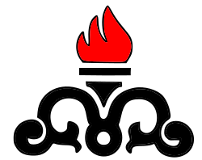

  <ion-grid>
    <ion-row>
      <ion-col align-self-center>
        
      </ion-col>
      <ion-col class="hide-sm">
        <ion-title>
          <h3>سامانه مدیریت اطلاعات فنی</h3>
          <h4>{{pageTitle}}</h4>
        </ion-title>
      </ion-col>
      <ion-col class="page-header-user" align-self-center>
        <current-user-info></current-user-info>
        <button *ngIf="!showCloseMenu && showMainMenu" ion-button clear (click)="onShowMainMenu()" icon-only>
          <ion-icon name="menu"></ion-icon>
        </button>
        <button *ngIf="showCloseMenu" ion-button clear (click)="onCloseClick()" icon-only>
          <ion-icon name="close-circle"></ion-icon>
        </button>
      </ion-col>
    </ion-row>
  </ion-grid>

